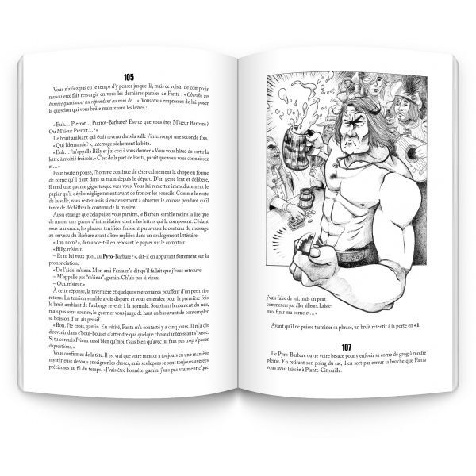

Bienvenue dans le compagnon du Billy. Il s'agit d'un outil qui t'accompagnera lors de tes aventures aux côtés du Pyro-Barbare. Il te permettra de te passer de dé, de crayon et de marque-page.
Ton caractère, ton inventaire, tes points en tout genre et les combats seront gérés ici, te permettant ainsi de profiter de ton livre La Forteresse Du Chaudron Noir sans te préocuper de tout cela.